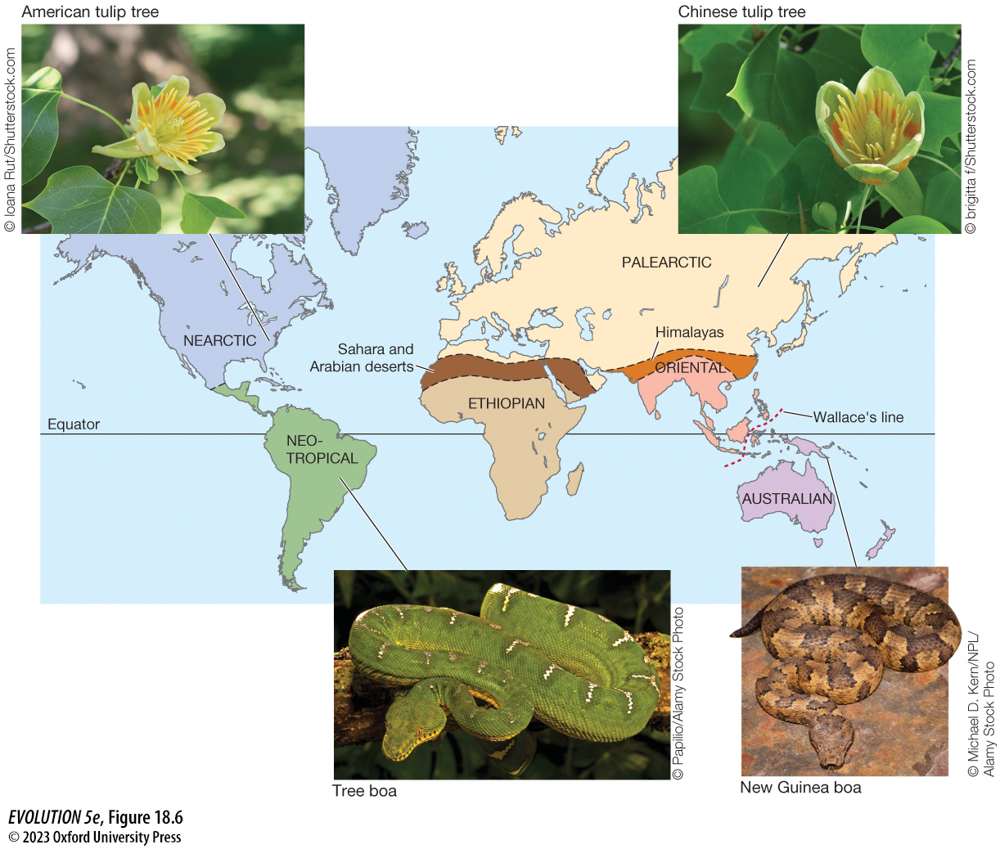
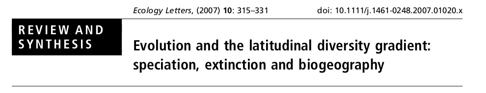
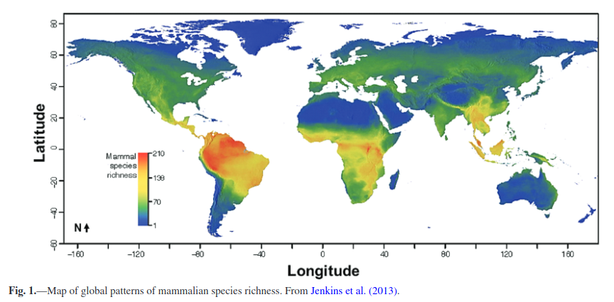
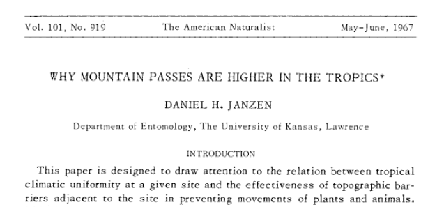
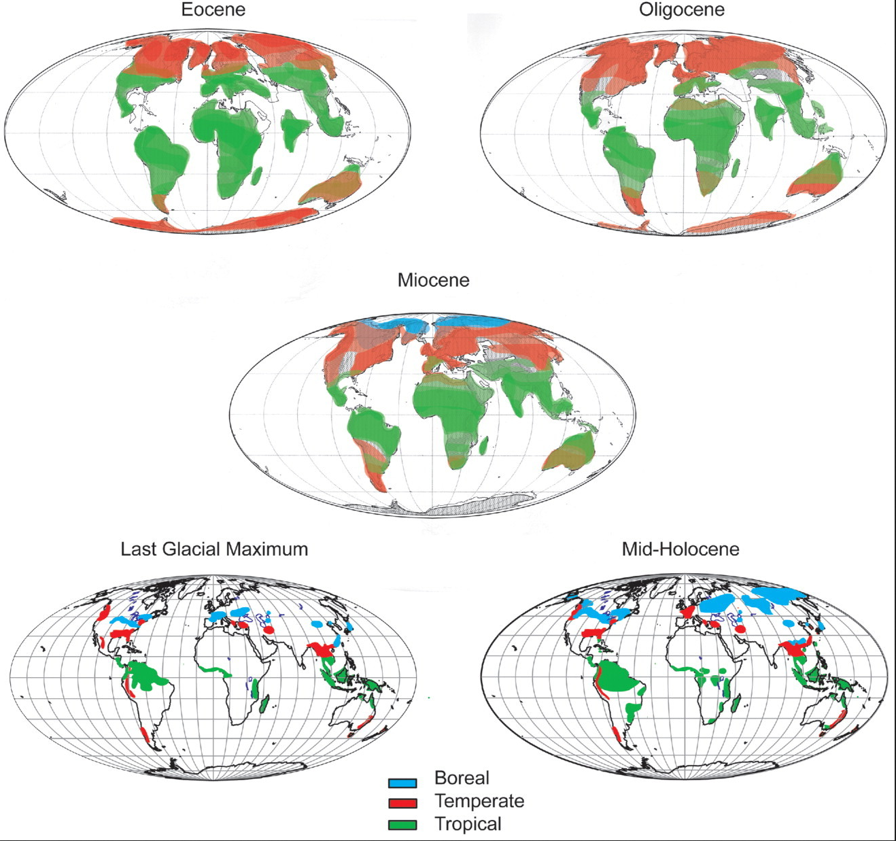
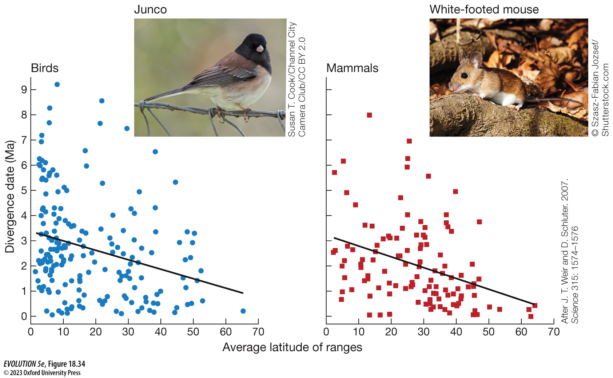
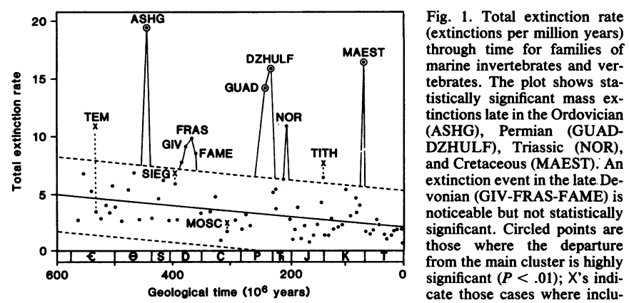
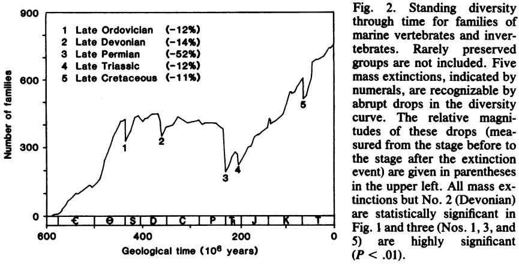
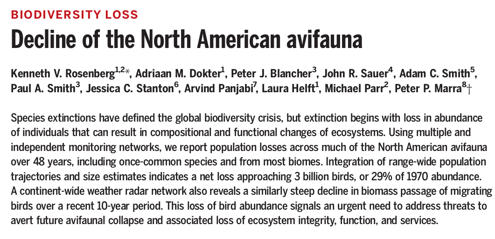
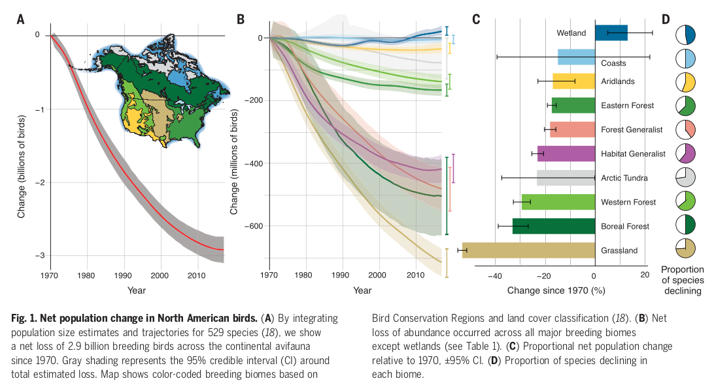

Fundamentals of Evolution
EEEB G6110
Session 3: Biodiversity and Extinction
Today's topics
1. Biodiversity patterns
2. Diversity through time and the fossil record
3. Extinction and conservation
How do you think diversity has changed through time?
Has diversity increased or decreased?
Are there limits on diversity? What does this mean?
What is the correct unit to quantify diversity? What are the pitfalls
of using alternative units?
Counting Current Diversity
How many species exist today? How can we quantify it? How accurate are estimates?
What about the number of genera, or families?
The Distribution of Diversity
Biogeographic realms: taxonomic groups are more uniform within than between
Phylogenetic Niche Conservatism
"Sometimes it is easier to move than to evolve"
Diversity in a region can change by Dispersal, Speciation, and Extinction
Speciation and/or extinction has been higher in some regions than others
Dispersal has been greater between some regions than others
Regions (continents or biomes) have not been static through time!
Latitudinal Diversity Gradient (LDG)
 
Models of differences in diversity between regions
To explain current diversity patterns such as the LDG

LDG: Physiological Tolerances
"Mountain passes are higher in the tropics" (Jansen 1967)
Species in lowland tropical environments experience a narrower range of temperature than those in temperate regions and this results in the evolution of greater physiological specialization and reduced opportunity for dispersal across unfavourable climatic regions (higher speciation).
LDG: Evolutionary Speed
Rohde (1978, 1992) proposed that biodiversity peaks at the equator due to the kinetic effects of environmental temperature on rates of biological processes. Mechanistical- ly, this "evolutionary speed" hypothesis links biodiversity to temperature through its effects on mutation rates and generation times of individuals which, in turn, lead to faster rates of genetic divergence among populations, and higher rates of speciation in communities
LDG: Biotic Interactions
Schemske (2002) suggested that natural selection in tropical populations is mainly due to geograph- ical differences in the pattern and magnitude of species interactions, and could thus promote the rapid evolution and coevolution of adaptations, and ultimately speciation (similar to Red Queen).
LDG: Time and Area
Fine and Ree (2006) propose that tropics have existed larger and longer.
Measuring/Estimating Speciation and Extinction
Is the tropics a museum or cradle? Maybe more of a museum 
The Geological Record of Diversity
For decades geologists debated whether diversity was at a steady
state through most of paleohistory, or if it has shown directional
trends.
The precise pattern of taxonomic richness in geologic time remains the
subject of considerable debate, but the broad outline of that history is now
generally accepted. There were comparatively few species during the Paleozoic
and early Mesozoic, and diversity increased substantially in the past hundred
million years (Signor 1990).
The biosphere
reached the zenith of the longest sustained period of taxonomic diversification
in the Earth's history in the Pliocene and Pleistocene (5-2Mya), when climatic
change and the advent of organized human activity then checked that diversification.
Diversity has increased through time, but why?
While the patterns of taxonomic diversity through time have become increasingly evident, the processes underlying those patterns, and their ultimate causes, remain obscure. A number of physical and biological processes likely influence diversity, including continental drift, changing sea levels, mass extinctions, evolutionary innovation, and others.
Biases in the record
The fossil record of marine invertebrates is generally superior to that of terrestrial plants or animals. But even the marine record includes only a smalll fraction of the species that have existed in the geological past. Something between 1 and 10% of extinct skeletogenous animals are represented in the fossil record. These are mostly shallow water benthic species that construct durable, heavily mineralized skeletons. In the modern oceans, species that possess heavily mineralized skeletons constitute only ~30% of benthic communities (Signor 1990).
Biases in the record
Many environments, especially terrestrial habitats, lack any
significant sedimentation or are dominated by erosion, and
consequently lack a fossil record.
The fossil record of marine invertebrates is generally superior to that of
terrestrial plants or animals. But even the marine record includes only a small
fraction of the species that have existed in the geological past. Something
between 1 and 10% of extinct skeletogenous animals are represented in the
fossil record. These are mostly shallow water benthic species that
construct durable, heavily mineralized skeletons. In the modern oceans,
species that possess heavily mineralized skeletons constitute only ~30%
of benthic communities (Signor 1990).
Global abiotic factors affecting diversity
The dominant factor determining long-term variation in the taxonomic
diversity of marine organisms is the arrangement of continental land masses
on the earth's surface.
When the continents are gathered into a single land mass there are
few distinct provinces. Land masses restrict the ability of marine organisms
to disperse or migrate, depending upon their position, especially when the
continents interrupt east/west currents.
Similarly, dispersed land masses allow the independent evolution of terrestrial
faunas and floras, such as the unique biotas of Australia or Madagasgar (or
South America prior to the formation of the Central American land bridge)
The number of provinces was uniformly low during the Paleozoic and early
Mesozoic, and peaked in the Recent era.
Sepkoski Curve
Raup and Sepkoski (1982) constructed the first massive-scale dataset of marine fossils and applied statistical methods to estimate patterns of diversity and extinction through time. Diversity of Marine animal families through time.
 Sepkoski Curve
Overall diversity in terms of the number of families or genera has
increased throughout the Phanerozoic (Cambrian to now).
There have been 4-5 mass extinction events that vary significantly
from the background rate of extinction: O, P, T, K, (maybe D).
The background extinction rate has decreased through time. An increase
in speciation rate is not necessary to explain this increase in
diversity. Raup and Sepkoski ask: Does this represent an "optimization of fitness through time"?

Red Queen Hypothesis
Has the background extinction rate really decreased through time? And if
so, how? Are newer species less prone to extinction than in the past?
Val Valen measured the length of time that genera persisted throughout
the Phanerozoic and showed that this duration has remained constant.
Lineages have not evolved to become more resistant to extinction!
One explanation for this is termed the Red Queen Hypothesis. It states
that because the selective environment (and thus risk of extinction)
is always changing, it is not possible to become optimally adapted.
Instead, a lineage must continually evolve simply to survive (keep
running just to stay in place).
More ecological niches are filled now than in the Cambrian
The evolution of burrowing, tiering, predation, defense, and many of other key innovations have created new niches that allow more species to partition the same limited space. Does this increase overall diversity? Is there a limit to how much the environment can be partitioned? Is it always increasing?

Niche construction
Not only has species diversity changed through time, but so too
has the morphological and ecological disparity of lineages (i.e.,
the number of niches, or ways to live).
Many organisms create their own niche (niche construction). Many
of the ecosystems we observe today did not exist in prior geologic
epochs.
Example: Although forests existed longer, true "Rain forests" are
only <150Mya. Prior to this, the hydraulic efficiency of forest
plants (mostly non-Angiosperm) was not great enough to hold the
water content needed to self-sustains modern rain forests.
Extinction:
In the life of any species, extinction is the final step. All
species eventually go extinct.
Human's have greatly accelerated the rate of extinction, causing
a "Sixth mass extinction".
Extinction risk is highly non-random. Past adaptations that make
some species more or less resistant to human disturbance did not
arise as adaptations to survive humans, rather they arose through
evolution by drift or selection given their everyday toil for
survival and reproduction. So it was the same for other mass
extinctions. Non-randomly, some clades of organisms had adaptations
that by chance made them more likely to survive an unpredictable
event.
Extinction has shaped modern diversity
As some lineages went extinct others often exploited the open niche space.
The fast rate by which diversity bounces back from mass extinctions, filling
similar niche space, demonstrates the importance of species interactions
as limits on diversity.
Imcumbent lineages can prevent other lineages from diversifying, competitive
replacement is much slower and rarer than the rapid replacement seen after
mass extinctions.
Extinction: to save the few or the many?
Human's have clearly greatly accelerated species extinctions, but to what extent should we prioritize efforts on preventing extinction, versus protecting habitat/communities/biomes?
 